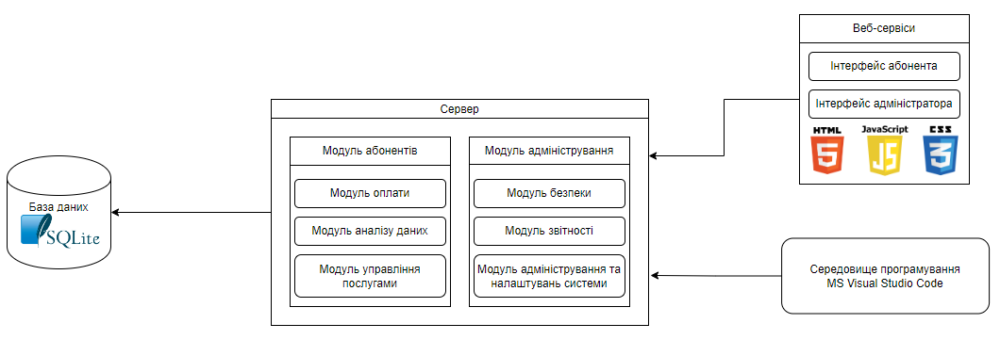

Звіт
про лабораторну роботу №3 з курсу
"Програмна інженерія розподілених інтернет-застосувань"
студента групи ІПЗ-21-2
Губарєва Ростислава Вадимовича
Завдання лабораторної роботи
Розробити програмний модуль «Картотека абонентів АТС». Картотека містить відомості про телефонах та їх власниках . Фіксує заборгованість по оплаті (абонентной і тимчасової). Считается, що постійна оплата місцевих телефонних розмов уже введена
Результат виконання роботи
Система може бути побудована на базі бази даних, де зберігаються відомості про абонентів, їх телефони та оплати. Вона може бути реалізована за допомогою реляційних баз даних, таких як MySQL або SQLite3.
Для зручності користувачів система може мати веб-інтерфейс або десктопну програму, де можна переглядати, змінювати та вносити дані про абонентів, їх телефони та стан заборгованості.
Система може автоматизувати процеси внесення оплати та контролю за заборгованістю. Наприклад, автоматичне відключення послуг при значній заборгованості або автоматичне нагадування про оплату.
Також, система може надавати можливості для створення звітів та аналізу даних щодо оплати, заборгованості, паттернів використання послуг і т.д., що допомагає у прийнятті управлінських рішень.
При необхідності система повинна мати можливість масштабуватися, щоб вміщати зростаючу кількість абонентів та даних.
Тому я вважаю, що для цієї системи підійде архітектурний стиль Клієнт/сервер, в якому система розділена на два додатки, де клієнт виконує запити до сервера.
Система складається з декількох модулів.
Модуль абонентів: Де користувач може переглядати, додавати, видаляти абонентів, переглядати їхні контактні дані, історію платежів тощо.
Модуль адміністрування та налаштувань системи: Дозволяє адміністраторам управляти користувацькими правами, налаштуваннями системи та іншими аспектами, що стосуються адміністрування програми.
А також підключенa база даних SQLite з даними про абонентів, їх платежами, заборгованостями тощо.